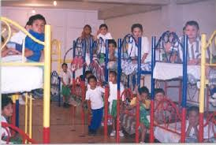
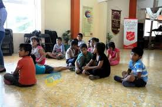
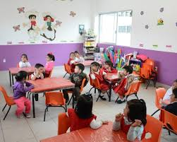

"Granitos de arena"
- 

- 
- 


Un orfanato, orfanatorio, orfelinato, centro de acogida de menores o "centro de protección de menores" es una institución encargada del cuidado de los menores de edad, huérfanos o abandonados (expósitos) y de los niños o adolescentes, a quienes las autoridades han separado de sus progenitores, retirándoles la patria potestad. Normalmente los orfanatos son considerados como una alternativa inferior a la adopción o a las casas de acogida y pueden estar financiados mediante capital público o privado, siendo tradicional la adjudicación a entidades religiosas.
la mayoría de los ambientes de los orfanatos, particularmente para infantes y niños pequeños, no sostienen el crecimiento adecuado del niño.En muchas instancias, la colocación en orfanatos puede producir efectos a largo plazo y algunas veces
permanentes en los cerebros de los niños y en su desarrollo físico, intelectual y socioemocional. Los niños criados en orfanatos de grande escala frecuentemente tienen problemas de crecimiento generalizados, incluyendo retrasos de crecimiento (retraso severo del crecimiento), y deficiencias en las habilidades motoras finas y gruesas y de coordinación. Mientras más grande sea el orfanato, menor son las posibilidades de que el niño reciba cuidado consistente por parte de un cuidador enfocándose en las necesidades individuales del niño. Típicamente, los niños serán alimentados grupalmente siguiendo un horario en vez de cuando se pida, los pañales se cambiarán en un horario en vez de cuando se necesite, y menos atención se le prestará al crecimiento individual, el desarrollo emocional y social del niño. Los cuidados de baja calidad y una deficiencia de estimulación individual pueden llevar no solo a problemas de salud y de desarrollo, sino también al aislamiento y falta de identidad (el sentido esencial del ser que se desarrolla a través de relaciones estrechas).
Los efectos negativos asociados a los orfanatos son más severos mientras más tiempo permanezca un niño bajo el cuidado residencial a gran escala, y son más críticos en niños más pequeños, especialmente aquellos menores a tres años de edad. Los primeros tres años de vida son un “periodo sensible” donde un niño requiere contacto íntimo tanto físico como emocional. Si esto no está presente, existe un alto riesgo de que el desarrollo será afectado significativamente.
En colima no se concideran orfanatos como tal sino como casas hogares, donde se pueden encontrar niños en estado de abandono, en cuidados por que los padres no pueden disponer de tiempo para ellos (podria decirse que algunos son como tipo internado donde los niños estan ahi de lunes a viernes y los fines de semana se van con sus padres),niños que sufren maltrato interfamiliar y adolescentes que no cuentan con el apoyo de sus padres u otro familiar cercano.